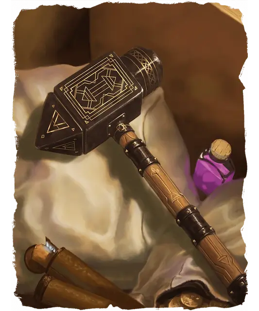

Сокрушитель
Whelm
Оружие (Боевой молот), артефакт (требуется настройка Дварфом или существом, настроенным на Пояс дварфов)

Сокрушитель — могущественное оружие, выкованное дварфами и утерянное в подземельях горы Белого Шлейфа.
Вы получаете бонус +3 к броскам атаки и урона, совершаемым с этим магическим оружием.
Метание. У Сокрушителя есть свойство Метательное с нормальной дистанцией 60 футов и максимальной 180 футов. Когда вы попадаете дальнобойной атакой этим оружием, оно наносит 1к8 дополнительного Силового урона (или 4к8 дополнительного Силового урона, если цель — Великан, Конструкт или Элементаль). Немедленно после попадания или промаха такой атакой Сокрушитель прилетает обратно в вашу руку.
Ударная волна. Вы можете действием Магия ударить по земле Сокрушителем и отправить ударную волну от точки удара. Каждое стоящее на земле существо в пределах 60 футов от этой точки должно успешно пройти спасбросок Телосложения Сл 20, иначе получает состояние Ошеломлённый на 1 минуту. Существо повторяет спасбросок в конце каждого своего хода, при успехе оканчивая на себе этот эффект. Как только это свойство использовано, его нельзя использовать снова до следующего рассвета.
Сверхъестественное восприятие. Пока вы держите оружие, оно предупреждает вас о местоположении всех тайных и замаскированных дверей в пределах 30 футов от вас. Кроме того, вы можете сотворить заклинание Обнаружение зла и добра или Поиск объекта с помощью оружия. Как только вы сотворите заклинание с помощью Сокрушителя, вы не можете сотворить это заклинание с помощью Сокрушителя снова до следующего рассвета.
Разумность. Сокрушитель — разумное оружие Принципиального Нейтрального мировоззрения, с Интеллектом 15, Мудростью 12 и Харизмой 15. Оно слышит в пределах 120 футов и обладает Тёмным зрением дальностью 120 футов.
Оружие общается с его носителем телепатически (оно знает Великаний, Дварфийский и Гоблинский).
Личность. Сокрушитель связан с кланом дварфов, создавшим его, известным как клан Данкел или клан Могучих Молотов. Он мечтает быть возвращённым в этот клан. Цель Сокрушителя — защищать дварфов. Если владелец не разделяет эту цель, возникает конфликт.
Уничтожение Сокрушителя. Сокрушитель можно растворить в кислой желчи недавно убитого древнего чёрного дракона. Его также можно расплавить в кузницах клана дварфов Могучих Молотов, но это может сделать только законный предводитель этого клана.